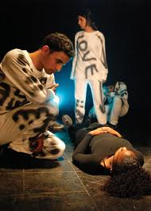

«Theatre as resistance» with The Freedom Theatre from Jenin Refugee Camp in Palestine
- Dato:
- 12.09.2013 til 12.09.2013
- Start kl :
- 17:00
- Slutt kl :
- 22:00
- Adresse:
- Norsk Skuespillersenter, Welhavensgate 1, Oslo
 I samarbeid med Marius Kolbenstvedt og TeaterTanken tilbyr vi en workshop med The Freedom Theatre fra Palestine.
{kind=link}
Teater som motstand
Ben Rivers fra The Freedom Theatre kommer til Oslo for å være med på en konferanse i forbindelse med tyveårsdagen for Osloavtalen, der de skal delta i et panel om om aktivistiske bevegelser og kultur som motstand under okkupasjonen. I tillegg gjør de også en workshop her på Skuespillersenteret.
Workshopen «Teater som motstand» vil ta for seg metoder for å bruke skuespillerverktøyet som motstand mot alle former for undertrykkelse og diskriminering, det være seg politisk, økonomisk, geografisk, religiøst, kulturelt eller kjønnsrelatert.
Workshopen vil foregå på engelsk. Ha på klær du kan bevege deg i. Workshopen er åpen for skuespillere, andre scenekunstnere, kulturarbeidere og studenter samt dem som arbeider med hjelpearbeid i en eller annen form.
Theatre for Truth and Steadfastness: The Freedom Bus and Palestinian Grassroots Mobilization
This workshop will present The Freedom Theatre's use of Playback Theatre for collective trauma response and grassroots political advocacy. Participants will also learn basic Playback Theatre forms for sharing and performing lived accounts of structural oppression.
About the Freedom Bus:
Since December 2011, The Freedom Theatre‘s Freedom Bus has engaged thousands of Palestinians and people from abroad in cultural actions that address Israel’s practice of settler colonialism, military occupation and structural apartheid.
Freedom Bus events occur in villages, towns, refugee camps and Bedouin communities throughout the occupied West Bank. In particular, the Freedom Bus partners with village cooperatives, popular struggle committees and grassroots organizations to hold multi-day “solidarity stays” and “freedom rides”. These events involve community visits, interactive seminars, guided walks, Hakawati (traditional storytelling), Zajaal poetry and live music.
A central feature of Freedom Bus events is the use of Playback Theatre. Through this method, a troupe of Palestinian actors and musicians invite stories from the audience and subsequently transform each account into a piece of improvised theatre. In the Palestinian context, Playback Theatre has found greatest utility in its application for collective trauma response and grassroots political advocacy.
In communities subjected to home demolitions and settler violence, The Freedom Bus also engages in building construction, monitoring, reporting and protective presence activity.
Endorsers of the Freedom Bus include Archbishop Desmond Tutu, Alice Walker, Angela Davis, Maya Angelou, Noam Chomsky, Omar Barghouti and Peter Brook. The Freedom Bus is also endorsed by the Boycott, Divestment and Sanctions National Committee (BNC) and the Palestinian Campaign for the Academic and Cultural Boycott of Israel (PACBI). A range of other Palestinian and international artists, activists, academics and organisations have also endorsed the Freedom Bus.
The Freedom Theatre
The Freedom Theatre is a theatre and cultural centre in Jenin Refugee Camp, occupied Palestine.
Since The Freedom Theatre opened its doors in 2006, more than 100 000 aspiring artists, spectators, visitors and friends have come together in the theatre to engage, perform, create and excel. Making quality a primary aim, The Freedom Theatre has staged several professional theatre productions and published numerous books, photography exhibitions and short films. They also offer professional training within the fields of theatre and multimedia.
The Freedom Theatre is developing a vibrant and creative artistic community in the northern part of the West Bank. While emphasizing professionalism and innovation, the aim of the theatre is also to empower youth and women in the community and to explore the potential of arts as an important catalyst for social change.
Through its work, The Freedom Theatre aims to:
- Raise the quality of performing and visual arts in the area;
- Offer a space in which children and youth can act, create and express themselves freely and equally, imagine new realities and challenge existing social and cultural barriers;
- Empower the young generation to use the arts to promote positive change in their community;
- Break the cultural isolation that separates Jenin from the wider Palestinian and global communities.
Read more on http://www.thefreedomtheatre.org/
Video about The Freedom Bus:
Trailer for one of their latest shows: